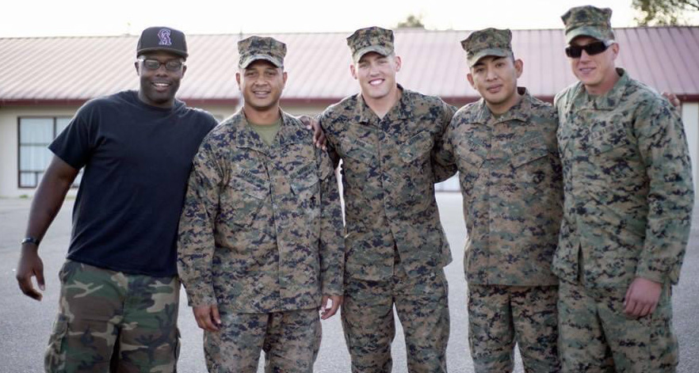
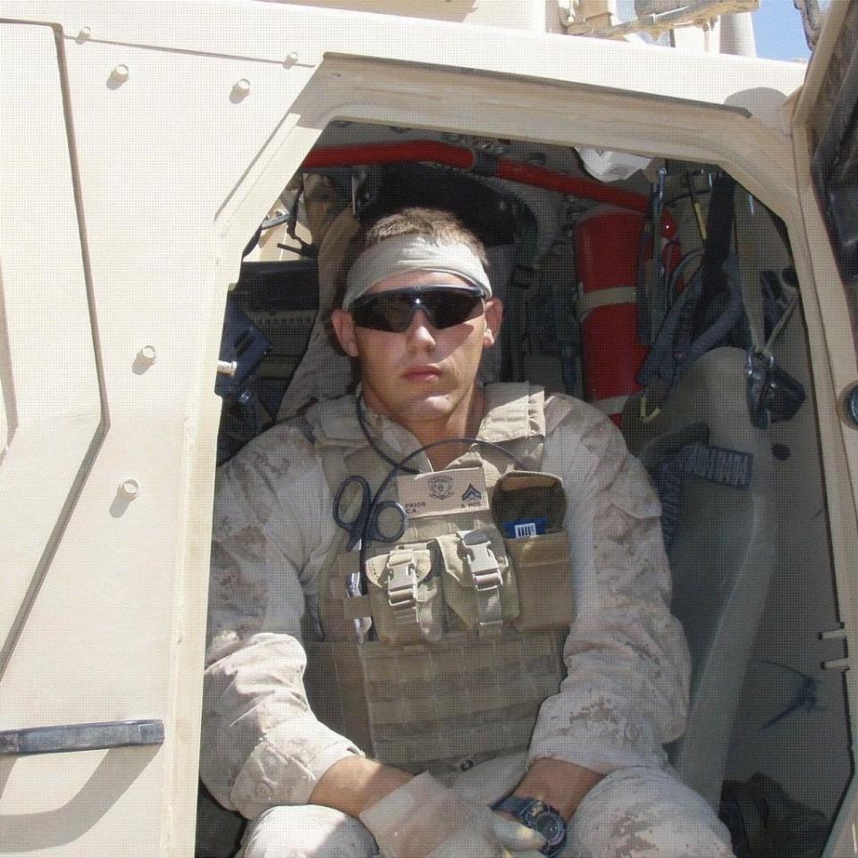
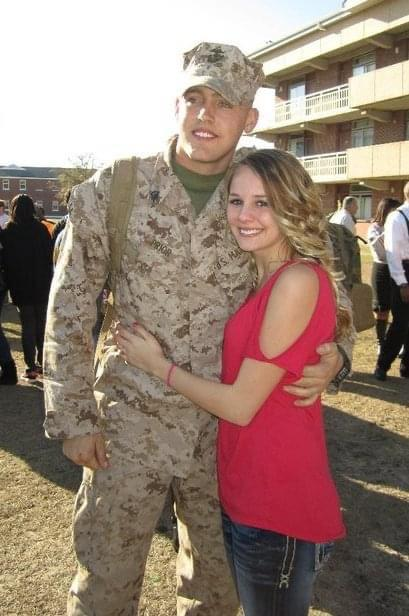
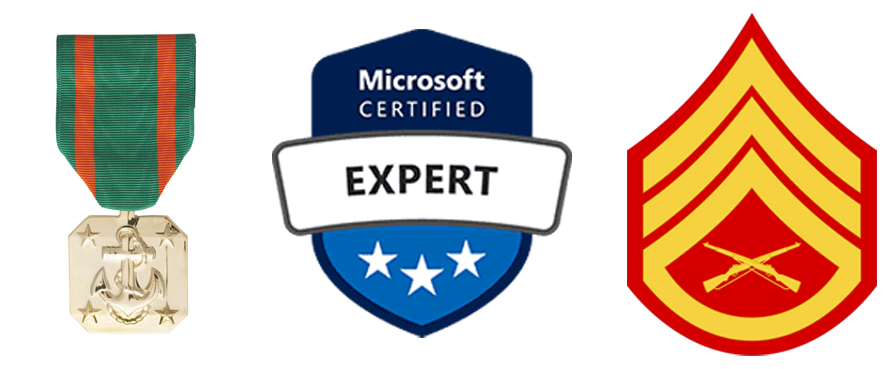

Facts about SSgt. Christopher Allen Prior
Christopher Allen Prior was born on March 1st, 1989, and grew up in Cedar Rapids, Iowa. Chris was raised by his mom, Robin and has a younger brother Shawn. He currently works as a senior cyber security consultant at a startup tech company. Growing up Chris has had a passion for competition and sports. He enjoyed playing football and running track. In his senior year at Prairie Highschool, he was nominated captain of his high school football team. Before graduating high school, he enlisted in the Marine Corps in 2006 and later graduating in 2007. Chris was anxious to get out of Iowa and see the world. Shortly after graduating in May 2007, he went to boot camp in Marine Corps Recruit Depot (MCRD) San Diego.
After bootcamp Chris was stationed at Marine Corps Base Camp Lejeune, North Carolina. On leave he met his now wife, Paige. However, not long after boot camp he deployed to Iraq in 2007. In 2010 Chris was deployed to Afghanistan. After getting back from his second deployment in Afghanistan he proposed to Paige Hingtgen and got married on March 5th, 2011. Chris then had orders to move to Marine Corps Base Camp Pendleton near San Diego, California where they both moved. They weren’t married long before he got deployed for the second time in Afghanistan in 2012 and returned in 2013. Two years later in January of 2015 he left the Marine Corps ready to set his roots down back in Iowa.
After leaving the Marine Corps, Chris temporarily held a job painting homes during construction. Then worked at a local internet service provider as a service technician. A few years into working at the ISP Chris got hired at a tech startup as a cyber security consultant. Over the past few years, he has worked diligently to become a senior cyber security consultant. “The Marine Corps taught me discipline and work ethic, to make something out of nothing.” Chris said. That clearly carried him into his civilian life when he works hard to accomplish his goals. He now has Microsoft Security Administrator and Microsoft Information Protection Administrator certifications.
During his time in the Marine Corps, Chris earned three Navy & Marine Corps achievement medals, expert Rifle certification, expert pistol certification and was even a Marine Corps martial arts instructor. Chris obtained the rank of E6 Staff Sergeant.
 (USMC, n.d.) (Microsoft, n.d.) (USMC, n.d.)
One of Chris’ major accomplishments was being able to have their dream home built for his family. Recently he was promoted to senior cyber security consultant. And continues to be motivated in his career so he can provide his kids with a better foundation to their future.